Sinbinder — учебник
Кадры сняты из самой игры прогоном: учебник обновляется вместе с ней.
Лагерь
F — по взгляду
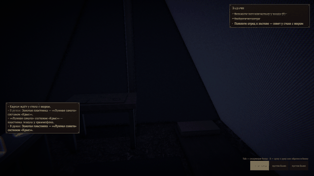
- Что делаешь
- Смотришь на вещь — глазами (середина кадра) или мышью сверху — и жмёшь F.
- Что происходит
- Подсказка внизу называет то, на что смотришь: эту пластинку, ту, граммофон. F берёт её.
- Почему
- Рядом бывает много вещей сразу. Прежде F доставалось ближайшей — теперь той, что под взглядом.
Сесть у огня
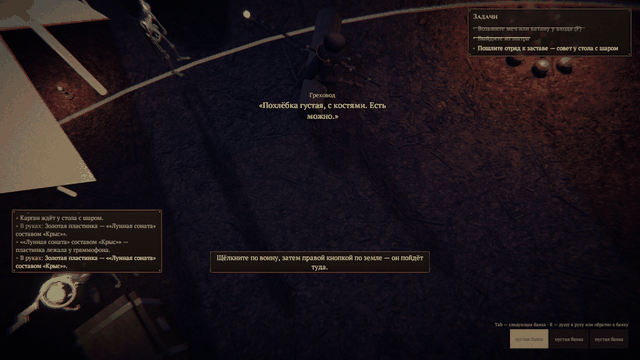
- Что делаешь
- Смотришь на бревно у костра — «F — сесть на бревно».
- Что происходит
- Греховод садится на ближнюю половину лицом к огню. Шаг, приказ мышью или F — встаёт.
- Почему
- Лагерь — место, где живут, а не только проходят. Сидя, до огня рука достаёт: полено можно бросить, не вставая.
Полено в костёр
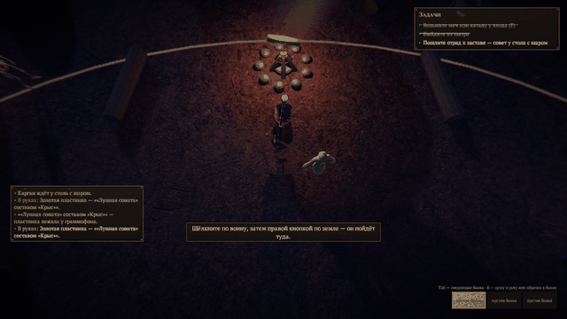
- Что делаешь
- Смотришь на огонь — «F — подбросить полено».
- Что происходит
- Вспышка, искры, треск — и кто-то у огня отзывается вслух, своим голосом.
- Почему
- Лагерь отзывается: по ответу видно, кто какой. Каждый говорит раз за вечер.
Ворон Каргана
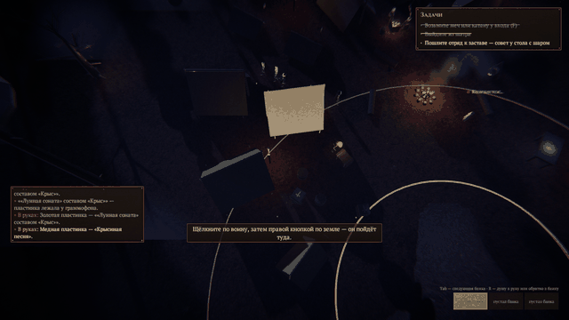
- Что делаешь
- Ничего — смотри.
- Что происходит
- Раз в сто секунд ворон слетает с плеча Каргана: круг над ним, конёк ближней палатки, и назад.
- Почему
- Ворон прибился к Каргану ещё при жизни и не ушёл после смерти. Карган падёт — ворон слетит к огню.
Перетягивание каната
Склеп и дверь
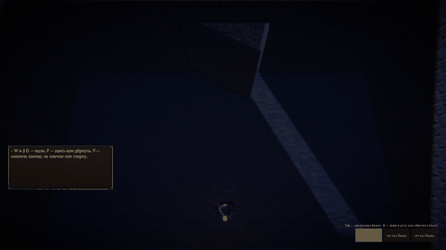
- Что делаешь
- Изнутри склепа смотришь на дверь — «F — открыть дверь склепа».
- Что происходит
- Створка распахивается внутрь. Закрытая держит путь: ни войти, ни выйти. Наведи мышь на трон или дверь — их прочность.
- Почему
- Конец партии — разрушенный трон. Дверь — первое, что держит натиск.
Расположить ничьего: подарок
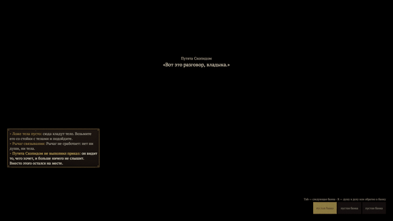
- Что делаешь
- Подходишь к ничьему, смотришь на него — «F — дать монету». В кошеле партии 20 монет.
- Что происходит
- Жадный рад больше всех, гордый — почти никак («Я не нищий»). Второй подарок тому же — вдвое дешевле. Завистливый рядом, кому не дали, обижен.
- Почему
- Воины на карте ничьи: слушаются того, к кому верны. Верность ко всем своя — и каждый грех ценит своё.
Приказ по душе
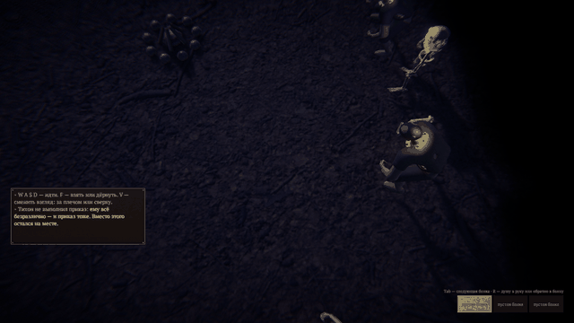
- Что делаешь
- Выделяешь ничьего и приказываешь, как своему.
- Что происходит
- Послушал — привыкает слушать. Приказ по душе поднимает верность сильнее: гордому — ему одному, гневному — в бой, унылому — недалеко.
- Почему
- Слушаться он не обязан: голосует сам, верностью к тебе. Подсказка при наведении скажет словом, как он к тебе.
Обучение «Перетягиванию» — девять уроков
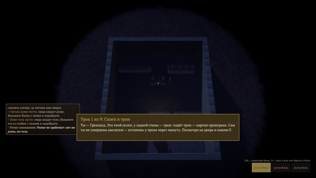
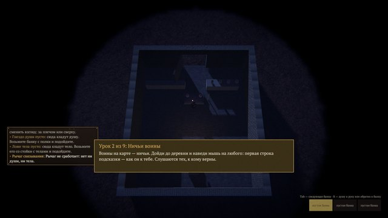
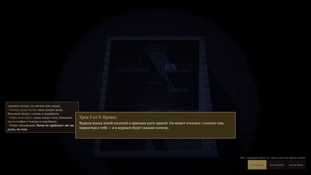
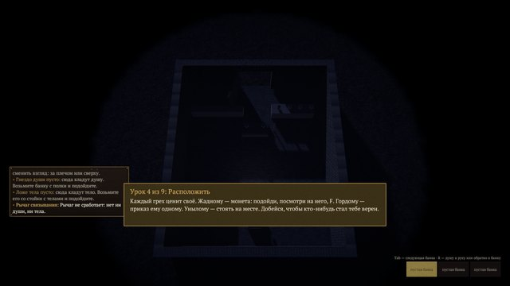
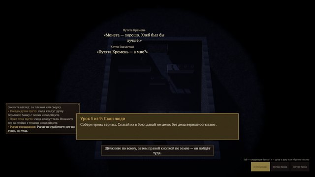
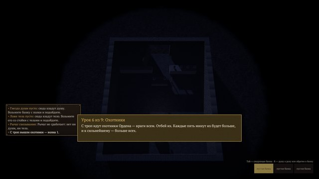
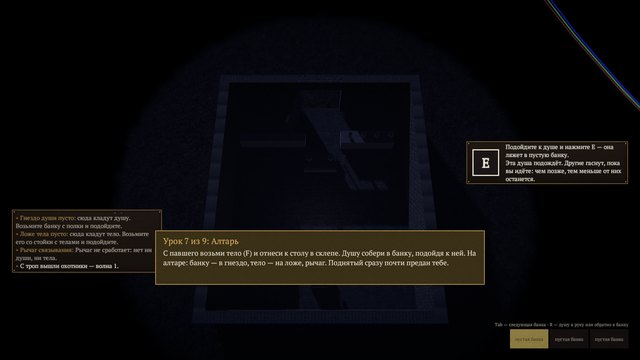
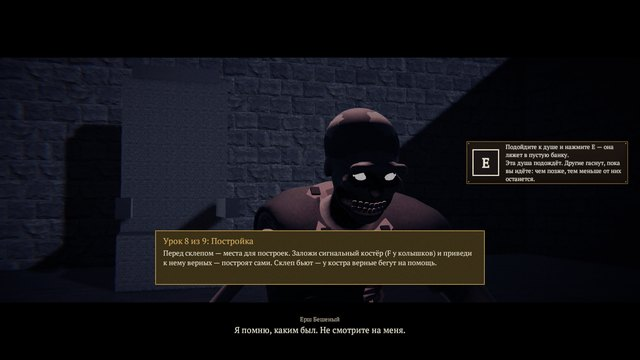
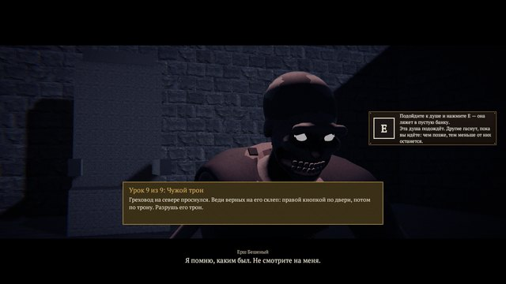